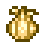
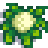
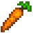
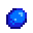
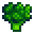
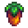
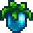
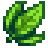
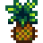

Calendario de cultivos
Cultivos de primavera

Ajo
Crece a partir de semillas de ajo después de 4 días. Añade un toque punzante y maravilloso a los platos. El ajo de alta calidad puede ser muy picante. Disponible en la Tienda local Pierre's a partir del segundo año. Se pagan 60 monedas por este cultivo.

Chirivia
Crece a partir de semillas de chirivía después de 4 días. Es primo hermano de la zanahoria. Tiene un sabor silvestre y está lleno de nutrientes. Se pagan 35 monedas por este cultivo.

Coliflor
Crece a partir de semillas de coliflor después de 12 días. Valiosa, pero de crecimiento lento. A pesar de su palidez, sus cabezuelas están llenas de nutrientes. Es uno de los cultivos que se pueden convertir en cultivos gigantes. Se pagan 175 monedas por este cultivo.

Zanahoria
Crece a partir de semillas de zanahoria después de 3 días. Un colorido tubérculo de rápido crecimiento y buen aperitivo. Se puede usar para alimentar al caballo para aumentar su velocidad (+0.4) por el resto del día. Se pagan 35 monedas por este cultivo.
Cultivos de verano

Arándano
Crece a partir de semillas de arándano después de 13 días. Una baya muy popular que se dice tiene muchos beneficios para la salud. Su piel azulada es la que tiene la mayor concentración de nutrientes. Se pagan 50 monedas por este cultivo.

Girasol
Crece a partir de semillas de girasol después de 8 días. Hay un mito que dice que siempre gira buscando el sol. Al cosecharlo dará 1 girasol y entre 0 y 2 semillas de girasol.Se pagan 80 monedas por este cultivo.

Maíz
Crece a partir de semillas de maíz después de 14 días. Uno de los cereales más populares, sus mazorcas frescas y dulces son un clásico del verano. Sigue produciendo después de madurar y puede crecer en el Verano u Otoño. Se pagan 50 monedas por este cultivo.

Tomate
Crece a partir de semillas de tomate después de 11 días. Sigue produciendo después de madurar, cada cosecha produce 1 tomate, con una pequeña probabilidad para más tomates. Es rico y ligeramente agrio, con una gran variedad de usos en la cocina. Se pagan 60 monedas por este cultivo.
Cultivos de otoño

Berenjena
Crece a partir de semillas de berenjena después de 5 días. Cuando se cosecha, cada planta da 1 berenjena con la posibilidad (0.2%) de obtener berenjenas extra. Es una verdura pariente del tomate, rica y saludable; es deliciosa frita o en estofados. Se pagan 60 monedas por este cultivo.

Brócoli
Crece a partir de semillas de brócoli después de 8 días y continúa produciendo cada 4 días. Los pequeños capullos de la cabeza florecida le dan una textura única. Se pagan 70 monedas por este cultivo.

Calabaza
Crece a partir de semillas de calabaza después de 13 días. Una de las estrellas del otoño, cultivada por sus semillas crujientes y su carne de sabor delicado. Además, su cáscara hueca puede tallarse para hacer decoraciones festivas. Es uno de los tres cultivos que se pueden convertir en cultivos gigantes. Se pagan 320 monedas por este cultivo.

Uva
Crece a partir del kit de uvas después de 10 días. También pueden ser recolectadas en el verano o crecer a partir de semillas veraniegas. Crece en espaldera y sigue produciendo después de la primera cosecha. En verano, las uvas son una fruta recolectable que crece de forma silvestre en todo Pueblo Pelícano. Se pagan 80 monedas por este cultivo.
Cultivos de invierno

Baya de gema dulce
Crece a partir de una semilla rara después de 24 días. Es, con diferencia, lo más dulce que has olido nunca. Se le puede dar al viejo maestro Cannoli en el bosque secreto para conseguir una Fruta estelar. Se pagan 3000 monedas por este cultivo.

Fruta milenaria
Crece a partir de semillas milenarias después de 28 días. Cuando se cosecha, cada planta da 1 fruta milenaria cada 7 días. Esta fruta lleva durmiendo eones. Se pagan 550 monedas por este cultivo.

Hojas de té
Son cosechadas de un arbusto de té cada día durante la última semana de primavera, verano, otoño e invierno, si es en el interior. La popular y energizante bebida se elabora a partir de estas hojas. Se pagan 50 monedas por este cultivo.

Ananá
Crece a partir de una semilla de ananá. Después de 14 días crece un arbusto de ananá y se cosecha la fruta. Una delicia tropical dulce y picante. Se pagan 300 monedas por este cultivo.